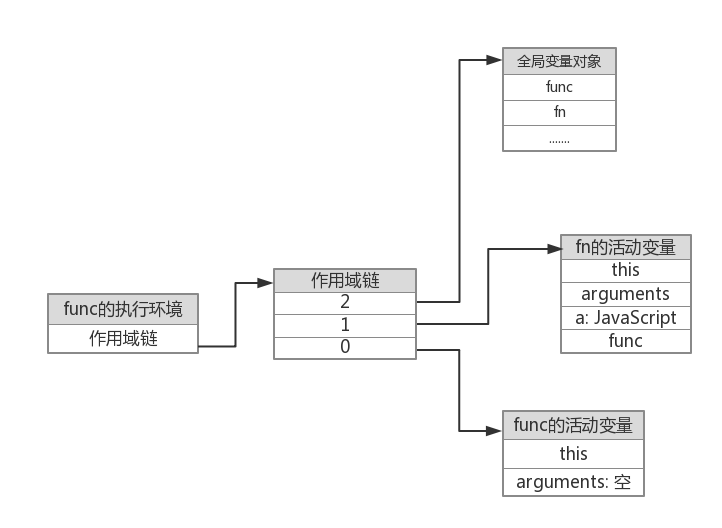
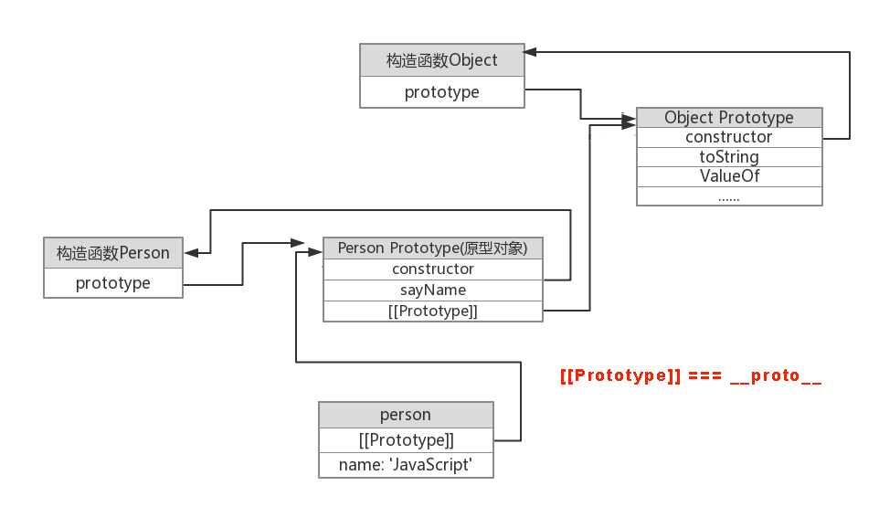

Javascript没有 块级作用域，但是函数有 词法作用域。
词法作用域（execution centext）：也被称为 执行环境。它是 标识符预解析 的过程中在 环境栈 里被创建的，同时被创建的还有一个 变量对象（variable object）（函数是 活动对象 activation object），用来存储当前环境中的标识符（变量、函数等）。
词法作用域链：简称作用域链（scope chain），是根据各个执行环境在 环境栈 中的先后创建顺序而组成的。它的作用是用于为 查找标识符 的时候提供一个搜索层级关系。
原型链：是通过prototype属性链接而成的，其主要作用是用于 查找引用类型的属性或方法。
